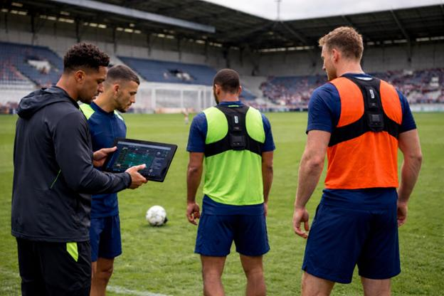

Nosso projeto tem como objetivo apresentar como a Inteligência Artificial está sendo utilizada no mundo dos esportes. A tecnologia vem sendo utilizada para analisar o desempenho dos atletas, melhorar os treinamentos, auxiliar na criação de estratégias e ajudar os profissionais a tomar decisões mais precisas.
O principal objetivo do nosso projeto é explicar como a Inteligência Artificial pode influenciar os esportes, mostrando seus pontos positivos e negativos. Também queremos mostrar como a tecnologia pode ajudar os atletas e treinadores e quais problemas podem acontecer quando existe uma dependência muito grande da IA.
A Inteligência Artificial pode ajudar na análise do desempenho dos atletas, identificar padrões, melhorar os treinamentos e ajudar na prevenção de lesões. Com isso, os atletas podem receber treinamentos mais personalizados e os treinadores podem tomar decisões utilizando uma quantidade maior de informações.
Apesar dos benefícios, a IA também pode causar alguns problemas. O uso excessivo da tecnologia pode gerar dependência, além de existir o risco de erros nos dados utilizados. Também existe a questão da privacidade das informações dos atletas e da desigualdade entre equipes que possuem mais ou menos dinheiro para investir em tecnologia.
A Inteligência Artificial pode trazer muitos benefícios para o mundo dos esportes, principalmente quando utilizada para analisar dados e melhorar o desempenho dos atletas. Porém, é importante que ela seja utilizada como uma ferramenta de apoio e que o julgamento humano continue sendo importante nas decisões.

Nome do grupo: Os Laranjinhas
Integrantes: Davi Fadin Beraldo - RA: 26006779
Leonardo Henrique Lobo Abbade - RA: 26008428
Pedro Henrique Seiji Tamaoki - RA: 26006053
João Vitor Garcia Rodrigues Carrareto - RA: 26008852